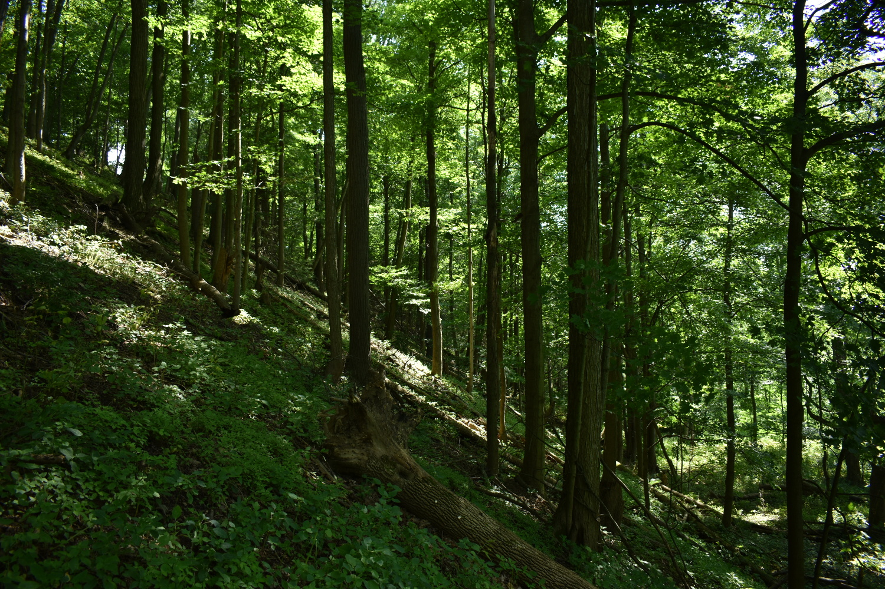

Hemlock - Red Oak - Mixed Northern Hardwood Plant Community
Concept
This 7-8 acre area begins with a diagonal path across from the house and extends to the eastern boundary of the property. This east-to-west path was originally (1930s - 40s) an access to the upper field for animals and horse-drawn farm implements. Following the WWII and the coming of tractor-drawn implements, access was provided by a newly cut farm lane that now runs on the opposite diagonal through this forest to the top of the hill. In 1974 when we purchased ChicoryLane, this area was the only forested area on the farm, with the western extent of the hill being pasture. Consequently, this remnant forest is the only segment of the Hemlock - Red Oak community on the property. As such, it is the only location where Hemlock, American Beech, Hophornbean, American Hornbean, Serviceberry, May-apple and other members of that community were originally found. It is a healthy forest and the main objective of our enhancement project is to control woody invasives - Tatarian Honeysuckle, Multiflora Rose, Autumn Olive, and Fox Grape. We will also increase desirable and compatible shrubs - Viburna and Dogwoods - as well as herbaceous plants, especially members of the Cohosh family.Steps
- Select a site
- The segment of the wetland noted above, selected (complete)
- Record it
- Images
- Plant species
- Inventory wildlife (fish, birds, insects) in or using the site
- Base Map
- Plan
- Species whose numbers could be increased
- Species whose numbes could be decreased
- Species not currently pesent whose introduction could be beneficial
- Plant Palettes
- Planting Map
- Implement
- Sequence of actions
- Resources needed not currently available
- Timeline
- Assess
- Narrative
- Data
- Notes